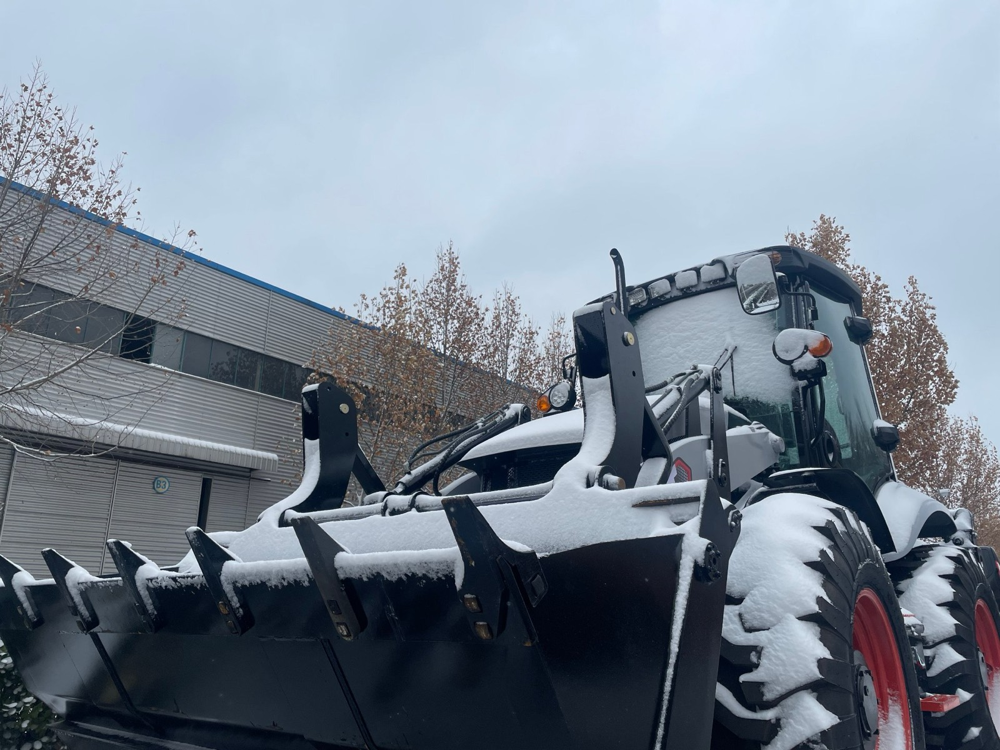
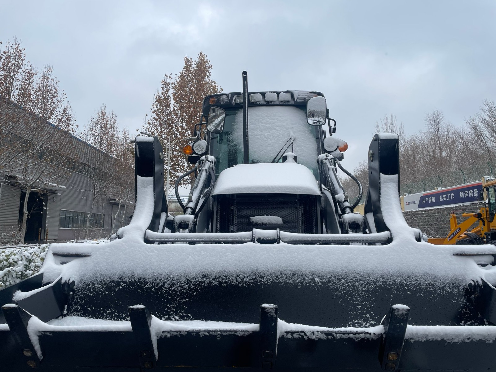

Snow on a machine that still has four months of work ahead of it. Nothing in this picture is broken — the battery, the fuel, the oil and the ground are all exactly as they were in September. That is the whole point of what follows: every margin winter is about to close is still open today, which is why the work belongs in the week before the first frost and not on the morning the machine refuses to start.
Winter Does Not Break Machines — It Audits Them
A machine is a stack of margins. The battery's ability to crank, against the torque needed to turn cold oil. The fuel's willingness to flow, against the filter's ability to pass it. The hydraulic pump's ability to lift oil, against how thick that oil has become overnight. In warm weather every one of those margins has slack in it — which is exactly why a machine with a tired battery, the wrong oil grade and a half-blind fuel filter works perfectly in July and fools its owner completely.
Cold does not add a problem. It closes the margins. And because each margin closes at a different rate, the failure never feels gradual: it arrives suddenly, on the coldest morning of the year, which makes it feel like bad luck rather than arithmetic.
There is a second audit happening underneath the first one, and it catches people who did nothing wrong with their fluids. It audits the machine's calendar. A machine that works five days a week in winter keeps itself warm and keeps its battery genuinely charged. A machine that works two days a week never fully warms, never fully recharges, and accumulates condensate in every tank it owns. Same machine, same oil, same operator, two completely different winters — because the difference is the duty cycle, not the hardware.
Which leads to the only real conclusion here: winter preparation is not "adding protection". It is restoring margins that the season is going to eat. And it has a deadline. The correct time to do this work is before the first frost — not the morning it arrives. I have never met a buyer who had a good January after starting to plan in January.
The Three Mechanisms Behind Almost Every Winter Failure
After enough winter phone calls, you notice that the complaints are not varied. They reduce to three physical mechanisms. If you can name which one is behind a symptom, you already know the remedy — and more usefully, you know which remedies are nonsense.
| Mechanism | What is physically happening | Where it shows up | What the operator says |
|---|---|---|---|
| Viscosity rises | Oil that flows freely at +30°C becomes something closer to honey as the temperature falls. Engine oil, hydraulic oil, transmission oil and grease all change behaviour together — and the starter or the pump has to overcome that change. | Cold-start cranking, pump suction, control response in the first minutes of the shift | "It cranks slowly." "The boom is sluggish." "It has no power until it has been running a while." |
| Wax and water | Diesel carries paraffin wax that crystallises as the fuel chills, and any water in the system freezes wherever it collects. Both of them block the narrowest point — which is almost always the filter. | Fuel tank, water separator, fuel filter, the low points of the lines | "It starts and then dies." "It ran all morning and quit after lunch." |
| Chemistry slows | A battery makes electricity by chemical reaction, and reactions slow when they get cold. So the machine demands more cranking energy at the same moment the battery can supply less of it. | Battery, cables, terminals, preheat system, charging circuit | "The battery was fine in summer." "It needs a jump every morning now." |
Not one of those three is a broken part. That is the whole point. A broken part is an event you cannot plan for; a closing margin is a number that has been shrinking since September, and you can measure it before it fails you. The rest of this article is those three mechanisms, one at a time.
The Cold Start: Why the Margin Disappears Exactly Here
Of the three mechanisms, the cold start is where the arithmetic is cruelest, because two curves move in opposite directions at the same time.
Demand goes up. Cold oil is thicker, so more torque is needed to turn the engine through it. The oil pump is pushing something closer to paste through galleries designed for liquid. And compression is harder to build in a cold cylinder, so more revolutions are needed before anything fires.
Supply goes down. A battery's available cranking current falls as its internal chemistry slows. A battery that spins a warm engine without any visible effort can be reduced to a fraction of that ability on a frosty morning — and it will still pass a casual test the week before.
What you experience as a failure is not a battery wearing out and not an engine ageing. It is the gap between supply and demand closing to zero. That single sentence explains three things owners find mysterious: why it happens on the coldest morning rather than gradually, why it happens with no warning the week before, and why the machine started perfectly well yesterday.
Now, what preheat actually does — because misunderstanding this is how people waste it. The preheat element exists to make the first firing happen sooner, so the engine needs fewer revolutions from the battery. It is a way of spending less of the one margin you cannot replenish at six in the morning. Two consequences follow: preheat is not decoration in a cold market, and cutting its cycle short is stealing from the same margin you are trying to protect.
The start that works, in order:
- Give the preheat system its full cycle. Counting to three and hitting the key is the same as not having a preheat system at all.
- Crank in short bursts with pauses between them, rather than one long grind. The pause lets the battery recover and the starter cool. Grinding until it "almost" catches is how a starter and a battery fail in the same minute.
- Do not work the throttle as though this were a petrol engine. On a diesel there is no accelerator pump priming anything, and at zero rpm you are mostly moving a linkage that does nothing useful.
- Never use starting fluid (ether) on an engine with a preheat system. The glowing element sits in the intake path, where it can ignite the ether at the wrong moment — and the damage is inside the engine, permanent and invisible from the outside. A diesel that needs ether to start is not telling you it needs ether. It is telling you that battery, fuel delivery or compression is below the threshold it should be. This is the most expensive cheap fix in winter, and it is sold at every parts counter.
- Once it fires, do not rev it. A cold engine at high rpm is the exact condition where the oil film is thinnest and the loads are highest. Let the idle settle, let oil pressure build, and treat the first minutes as the most expensive wearing period of the day — because that is precisely what they are.
Diesel in Winter: Wax, Water, and the Filter Nobody Drains
Diesel is not one fuel. It carries paraffin wax, and as it cools the wax begins to crystallise. First the fuel clouds. Then those crystals start collecting in the filter until it can no longer pass fuel at the rate the engine needs — which is why a winter fuel problem so often arrives as a machine that started fine and stopped twenty minutes later.
The fuel sitting in your tank also depends on where and when it was bought. The same supplier sells a different blend in a different season, and whatever filled your machine in September was blended for September. That is not a defect in the fuel; it is a fact about fuel. It does mean one question has a real answer and it belongs to your fuel supplier, not to me: what grade is in my tank, and how cold can it get before it stops flowing?
Water is the more common killer, and it does not arrive in the tank by accident — it condenses out of the air. A partly empty tank holds a lot of air. That air carries moisture. The tank warms during the working day and cools at night, and every one of those cycles paints a little more water onto cold steel. Over weeks it collects at the bottom of the tank, which is exactly where the pickup sits.
This gives you the most useful habit in the whole article, and it costs nothing: fill the tank at the end of the day, not the start of the morning. A full tank has almost no air in it to breathe in and out, so far less water forms overnight — and you walk up to a cold machine with no fresh condensate sitting in the bowl. Same fuel, same money, five minutes at the pump, one fewer way to be stranded.
The water separator and fuel filter are where all of this plays out. They are the lowest point in the fuel path and they are designed to catch exactly the water you do not want reaching the injection system — which also makes them the first components to freeze. Drain them on a schedule through the cold months rather than "when the machine tells you". By the time the machine tells you, you are standing next to a dead machine on the coldest morning of the month with a filter bowl full of ice, and the fuel quality question is no longer academic.
One honest word about additives, because winter sells a lot of bottles. An anti-wax additive can genuinely help fuel that is already in the tank, and it is worth carrying one. But it is a margin, not a plan. If the fuel in your tank is summer grade and the weather goes beyond its cold-flow limit, the additive is what is keeping you running — and margins are exactly what winter closes. Knowing your fuel's grade (which is also a question of what you are paying for at the pump — I went through fuel quality in the fuel consumption guide), draining your separator and keeping the tank full are the actual plan.
Cold-Morning Diagnosis: Read the Symptom Before You Buy the Remedy
Two machines fail on the same frosty morning in two completely different ways, and their owners very often buy the same remedy. The following table is the one I talk through on the phone, because the most expensive mistake in winter is not a missing tool — it is a correct tool applied to the wrong fault.
| What you hear | What it almost always is | What to do | What not to do |
|---|---|---|---|
| "It turns over slowly, or the starter labours" | Battery margin, cold oil, or both at once | Charge or jump from a known-good source; check terminals and cable condition; put the machine where preheat can actually work | Do not keep grinding it. Do not reach for ether |
| "It turns over normally but will not fire" | Preheat cycle cut short, or fuel not reaching the cylinders | Give the preheat its full cycle; check fuel supply, water separator and filter | Do not crank the battery flat — this was never a battery problem |
| "It starts, then dies after a few minutes" | Water, ice or wax progressively blocking the filter | Stop, drain the water separator, inspect the filter, check the fuel grade | Do not chase the idle setting or the injection pump. The engine did not change its mind |
| "It ran all morning and quit after lunch" | A filter slowly blinding as wax collects, or a fuel line at its cold-flow limit | Drain and inspect the filter; confirm what grade is in the tank | Do not assume the afternoon failure and a morning no-start are the same fault — they usually are not |
| "Hydraulics are slow and weak for twenty minutes, then fine" | Cold hydraulic oil. This is physics, not a fault | Warm it the correct way — see the next section | Do not adjust pressures and do not condemn the pump |
| "It needs a jump every single morning" | The battery is never fully recharged by short, cold, high-load runs | Charge it properly and test it; consider a maintainer where the machine sleeps | Do not keep jumping it from a vehicle. You are treating the symptom once a day |
Look at how many entries in that last column are about doing harm while trying to help. A good part of the damage that happens to machines in winter is done by a helpful person with a starting aid and no diagnosis.
Hydraulic Oil: The One Specification That Legitimately Changes With Climate
This is the one winter item where the correct answer is a genuine specification change rather than a routine, and it is also the one where the wrong choice does its damage silently.
The standard grade on these machines — and what most of the world runs — is ISO VG 46. In markets where the machine genuinely works below freezing for a real part of the year, ISO VG 32 is commonly specified instead, because it flows at low temperature where 46 has become reluctant. I went through the system itself, including what happens when oil is too thick or too thin, in the hydraulic system guide.
Both grades are correct answers, for different places. This is the same doctrine I use for everything else on the machine: the engine follows your market's rules, the axle follows your ground, and the oil follows the climate the machine actually works in. There is no better grade. There is a matched one.
What goes wrong in each direction is worth knowing, because neither failure announces itself:
- Too thick for the climate. At start-up the pump cannot pull the oil it needs, and the pump is the most expensive component in the system. Starvation shows up as cavitation — the pump is trying to move something it cannot lift — and the damage it does to itself is permanent and quiet.
- Too thin for the climate. Less film strength exactly where metal meets metal, more internal leakage past worn components, and heat generated instead of work done.
Water belongs in this section too, because hydraulic oil does not care that you have never opened the tank. A machine that works warm and cools overnight performs exactly the same condensation trick as the fuel tank, and the reservoir breather is the door it comes through. Water in hydraulic oil shows up first as a milky tint, then as sluggish functions, then as corrosion inside a system where nobody can see it. Check the breather. Check the level with the machine level. Look at what you drain rather than just topping it up.
And one line that has saved more machines than any additive: never top up hydraulics with whatever oil is on the shelf because the machine is low and the shop is closed. Two litres of the wrong oil is a cheaper afternoon than a contaminated system — but only if you do not then declare the reservoir "fine".
The Warm-Up That Actually Warms Something
This is the piece of winter operating advice I most often have to correct, and it is not only new operators who get it wrong: idling does not warm up the machine. Idling warms the engine's coolant and the oil circulating inside the engine. It does essentially nothing for the oil sitting in the hydraulic reservoir or the oil in the transmission, because those only warm when the oil itself is moving and being worked.
Which means the routine most sites actually follow — start it, let it idle while everyone has tea, then sink a full bucket into a hard pile — is backwards. You have spent fuel warming one system, and then put three cold ones under full load at the same moment. When hydraulic failures get described to me as something that "just happened", this habit is usually underneath them.
The warm-up that works is short and deliberate:
- A few minutes at idle after a proper start, to establish oil pressure and let the engine settle.
- Then cycle every hydraulic function, slowly, through its full stroke, with nothing in the bucket and no load on the machine: loader up and fully down, bucket curl and dump, backhoe boom, dipper and bucket, stabilisers down and up, steering fully left and fully right, and the auxiliary circuit if an attachment is fitted. Several unhurried passes.
- Listen and feel instead of watching a clock. The machine stops sounding tight. The boom comes down smoothly. The controls stop feeling sticky. That — not a fixed number of minutes — is the end of the warm-up.
- Only then start digging, and start light. The first few buckets belong to the warm-up, not to production.
The same logic applies to the transmission: move the machine gently, in both directions, at low speed, before you ask it to pull anything.
And one trade-off worth saying out loud, because winter arguments about it waste more fuel than the answer would: in deep cold, on a low-duty job where the machine sits between tasks, shutting down and restarting repeatedly means paying for a full cold start each time — and the first minutes after a cold start are the most damaging minutes a diesel engine has. Leaving it running burns fuel and accumulates hours. Which side is cheaper depends on your temperature, your fuel price and how long the pauses are. What is not defensible is restarting every fifteen minutes because idling "seems wasteful". In a cold market you are trading litres for engine wear and battery margin, and that trade is usually a bad one.
Working in Snow: Traction, and the Ground You Can No Longer See
If the machine is going to work through the winter rather than sit it out, two things change at once: how much grip it has, and how much you can trust what you think you know about the site.
On traction, three things matter more than anything else:
- Tyre chains are the honest answer on ice, packed snow and slopes — and they are the wrong answer on dry hard surfaces, where they damage both the chain and the surface while slowing you down for nothing. The details of chains, pressure and wear are in the tyre guide.
- Lower gears and gentle steering matter more than equipment. These machines steer through the rear axle, and a loader full of snow with a sudden steering input is how a machine ends up sideways somewhere it cannot recover.
- Weight distribution is a decision, not an accident. Whatever ballast or counterweight arrangement you run normally is the one you have in snow — so it should have been decided in autumn, not discovered on ice.
On what you can see — which matters more than traction:
- Clear the machine before you move it. Standing snow on the loader arms and the cab roof lands on the glass the moment you lift, and it lands exactly when the operator's attention is on the controls.
- Travel with the loader end forward over snow-covered or unfamiliar ground. If something is going to find the ditch, you would rather it were the bucket than the engine.
- Travel at a speed from which you can stop, on ground you cannot assess.

This is the photograph behind the advice above. Snow is sitting on the bucket, both loader arms, the mirrors and the cab roof — every flat surface the machine owns. The moment the loader lifts or the machine moves, that load arrives on the glass, and it arrives while the operator’s hands are already on the controls. Ten minutes with a scraper before the shift starts is cheaper than that.
And the part that has nothing to do with tyres: frozen ground is not the ground you walked in October. A soft shoulder, a ditch edge, a trench backfill, a pond margin, a septic cover — all still there, all under snow, all looking exactly like solid ground, with frozen surface sometimes only a crust over something soft. Add the daily freeze-thaw rhythm, where the surface melts in the afternoon sun and sets again as ice after four o'clock, and you have the real winter hazard on a site: not the temperature, but ground whose behaviour changes twice a day.
On the work itself, plainly: with the right attachment a backhoe loader clears a farm yard, a driveway, a small road or a loading area all winter, and we build a straight snow plough, a V-plough, a snow bucket, a snow blower and a sweeper for exactly that work — you can see them on the attachments page. What it is not is a purpose-built winter service machine, and I would rather say that now than have you find out with a metre of snow on the ground. If snow clearing is going to be a main job rather than a convenient extra, buy for that job and let the backhoe loader be the machine that does everything else.
Where the Cold Damage Actually Happens: Overnight
Almost nothing in this article happens while the machine is working. The wear that shows up in winter accumulates between shifts, and mostly by condensation.
During the day everything on the machine is warm: the fuel tank, the hydraulic reservoir, the engine, the cab. Overnight it all cools and contracts, and moist air is drawn into whatever is able to breathe — which is more places than owners expect. Run that cycle for four months and you have water at the bottom of the fuel tank, water in the hydraulic oil, and moisture inside electrical connectors that nobody will look at until a fault appears somewhere expensive.
So parking is a decision, not an afterthought:
- Park level, on ground that drains. The worst winter parking spot is the one where meltwater collects and refreezes. You will find out when the tyres are frozen to the surface, or the stabilisers are frozen down, or you are breaking the machine out of an ice pan before it can move anywhere.
- Fill the fuel tank before you leave it. Same habit as before, seen from the other direction: the tank spends the night full, and therefore quiet.
- A machine used every day wants its battery kept genuinely charged — not "charged enough". A large share of what gets reported as winter battery failure is a battery that has not had a full charge in weeks, because every run has been short and cold.
- A machine used every few days wants its battery charged, and ideally indoors. The battery that suffers permanent internal damage is the one left discharged through freezing nights — not the one that keeps working.
- Cover what is worth covering, and know the difference between shelter and a sealed plastic sheet that traps the very moisture it was supposed to keep out. Machines do not need to be wrapped. They need to be dry and breathing.
- Knock the snow and slush out of the bucket and off the undercarriage before you park. Packed snow and mud freeze into blocks around pins, links and the undercarriage overnight, and you will spend the first hour of the morning hammering at something that would have taken ten seconds the night before.
What Cannot Be Fixed in the Morning
I want to be straight about the limits here, because winter is the season that sells the most products that cannot deliver:
- No additive compensates for the wrong oil grade. The oil is in the system, and the system is what it is until you change it.
- No amount of cranking rescues a battery that is already below the threshold where the engine will turn. More cranking only spends what is left faster — and often takes the starter with it.
- No warm-up routine repairs a machine whose margins were never sized for the temperature it now lives in. If the winter where the machine works is colder than the winter it was configured for, the fix is configuration, not technique.
- And the honest one: if the machine is not going to do real work for months, the right answer is the storage routine, not heroic cold starts. Winter work and winter idle are two different jobs with two different procedures — the cold-season parking ritual is its own discipline, and I set it out in the off-season storage guide. Doing storage properly is not the same as keeping a machine ready to start in ten minutes, and I have seen more damage done by owners who could not decide which of the two they were doing than by either procedure carried out well.
Which buyer needs which routine is worth putting side by side, because the mismatch is the expensive part:
| How the machine is used this winter | What it actually needs |
|---|---|
| Works five days a week, all winter | The daily routine in this article: full preheat, proper start, real warm-up, tank filled at night, battery charged |
| Works two or three days a week | The same, plus genuine full charges between shifts and a hard look at the battery — this pattern is what punishes batteries |
| Works occasionally, sits most of the season | Storage discipline, and accept that starting it "just to keep it moving" repeatedly gives you the worst of both procedures |
| Sits until spring | The full storage routine — and do not start it at all unless you can run it long enough to put back everything the start just spent |
The Pre-Winter Checklist I Give Buyers
This is the list I send before the season turns. It is deliberately short, because a long list does not get done, and an unread checklist protects nothing.
| When | What | The mistake I see most |
|---|---|---|
| Two weeks before the season | Fluids: engine oil and hydraulic oil grades matched to the climate the machine will actually work in; coolant mixed to protect below the coldest night that market sees | Treating coolant as a formality and discovering in January that the mix was protecting a temperature the market passed in December |
| Two weeks before the season | Battery: fully charged, terminals clean and tight, cables sound — and an honest look at whether the charge rate matches how much the machine will actually run | Judging the battery in mild autumn weather and then trusting that judgement all winter |
| Two weeks before the season | Fuel: know the grade in the tank and its cold-flow limit; fit a new fuel filter and separator element before the season, not after the first failure | Finding out what was in the tank on the morning the machine stops |
| Two weeks before the season | Tyres and chains: check that the chains fit, on a dry day, in daylight | Discovering on the first icy morning that the chains fit a tyre size you no longer run |
| Two weeks before the season | Greasing: keep every point on schedule — cold grease in a dry joint is how pins and bushes wear fastest | Greasing more carefully in summer than in winter, when it matters more |
| Every working morning | Full preheat, a proper start, a real warm-up by cycling the functions — and the tank filled at the end of the previous day | Idling to warm up, then putting the machine into full load with cold oil |
| Every working morning | A two-minute walk around the machine before moving it: snow off the machine, bucket clear, nothing frozen to the ground | Starting it and driving off — which is how you discover a frozen stabiliser at the worst possible moment |
Nothing on that list costs much money. Most of it costs one afternoon before the season — and then a second afternoon on the day you find out which line you skipped.
What I Ask Before We Ship a Machine to a Cold Market
Buyers almost always describe their market with a monthly average. I would rather have the worst week of their winter. A machine configured for the average temperature of a market is wrong for the coldest nights of that market — and the coldest nights are exactly when the machine has to run.
So before locking an order that is going somewhere genuinely cold, these are the questions I want answered. All of them are settled before the machine is filled, because most of them cannot be changed afterwards without draining something:
- Which oil grades do we fill — for the climate where the machine will actually work, not the climate where it is built?
- What is the coolant mixed to protect, and does that cover the coldest night of that market?
- Is the battery fitted sized for the temperature the machine will start in, or for the temperature of the factory yard?
- What preheat does the engine have — and will the operator's habits and the locally available fuel support the way it works?
- For a market with a real winter, what does the cab need? Heater, defrost, sealing, insulation. A cab is not a comfort item in a cold market; visibility, and an operator who can still feel their hands, are part of the machine's output.
- Which winter attachments will this buyer actually use — and can the hydraulics for them be prepared while the machine is being built, rather than improvised on site afterwards? Same rule as every other attachment: anything that touches the hydraulic system is decided before the paint, not after. The reasoning is in the configuration matching guide.
- Does this market put salt on its roads in winter? This one surprises people: snow does not rust a machine — salt does. If machines in your market travel on salted routes, the corrosion plan matters more than the cold plan, and it belongs in the same conversation rather than a different one six months later.
None of that is a "winter package" I can print on a price list and hand over. It is a set of questions that have to be asked for the machine to arrive matched to the place it will live — which is the same principle as every other configuration decision in this business, applied to weather instead of to ground conditions.
Two machines, same model, same yard, same frost. One starts and works all winter without drama. The other becomes a story its owner tells for years about the winter the machine let him down. The difference is almost never the brand, and rarely the machine. It is whether anyone, back in September, treated the cold as a set of margins with a deadline attached.
Winter rewards boring work — the right oil, a full tank, a drained separator, a charged battery, a proper warm-up — and it punishes shortcuts on a schedule you can predict almost to the week. If your machine is heading into a cold season, tell me where it works, what it does and how cold it genuinely gets. I would rather spend ten minutes on your fluids and your habits in autumn than spend your winter hearing about it on the phone.
Taking Your Machine Into a Cold Season?
Tell me where it works, what it does and how cold it really gets. I will tell you what I would change before the season starts — fluids, battery, fuel, warm-up routine — and what I would leave alone. Including when the honest answer is that your machine is already right for your winter.
Ask Vivian on WhatsApp